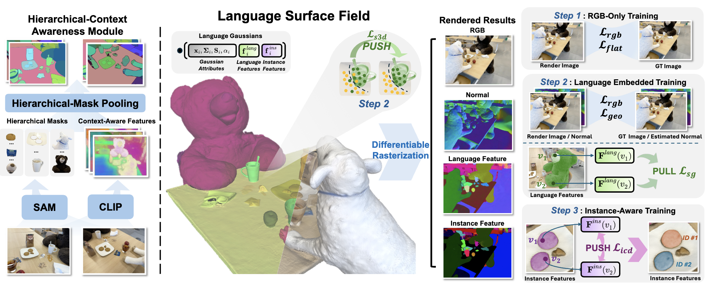

Abstract.
Applying Gaussian Splatting to perception tasks for 3D scene understanding is becoming increasingly popular. Most existing works primarily focus on rendering 2D feature maps from novel viewpoints, which leads to an imprecise 3D language field with outlier languages, ultimately failing to align objects in 3D space.
By utilizing masked images for feature extraction, these approaches also lack essential contextual information, leading to inaccurate feature representation.
To address these issues, we propose a LangSurf, which accurately aligns the 3D language fields with the surface of objects, facilitating precise 2D and 3D segmentation with text query, widely expanding the downstream tasks such as removal and editing.
The core of LangSurf is a joint training strategy that flattens the language Gaussian on the object surfaces using geometry supervision and contrastive losses to assign accurate language features to the Gaussians of objects.
In addition, we also introduce the Hierarchical-Context Awareness Module to extract features at the image level for contextual information then perform hierarchical mask pooling using masks segmented by SAM to obtain fine-grained language features in different hierarchies.
Extensive experiments on open-vocabulary 2D and 3D semantic segmentation demonstrate that LangSurf outperforms the previous SOTA method by a large margin.
Our method is capable of segmenting objects in 3D space, boosting the effectiveness of our approach in instance recognition, removal, and editing, which is also supported by comprehensive experiments.

Overview of proposed LangSurf. Given input views, we reconstruct a language-embedded surface field to enable 2D / 3D open-vocabulary segmentation as well as downstream tasks.
Our pipeline contains two main steps: 1) Hierarchical-Context Awareness Module extracts context-aware features with multiple hierarchies;
2) Language-Embedded Training utilizes a joint training strategy to construct language-embedded surface field.